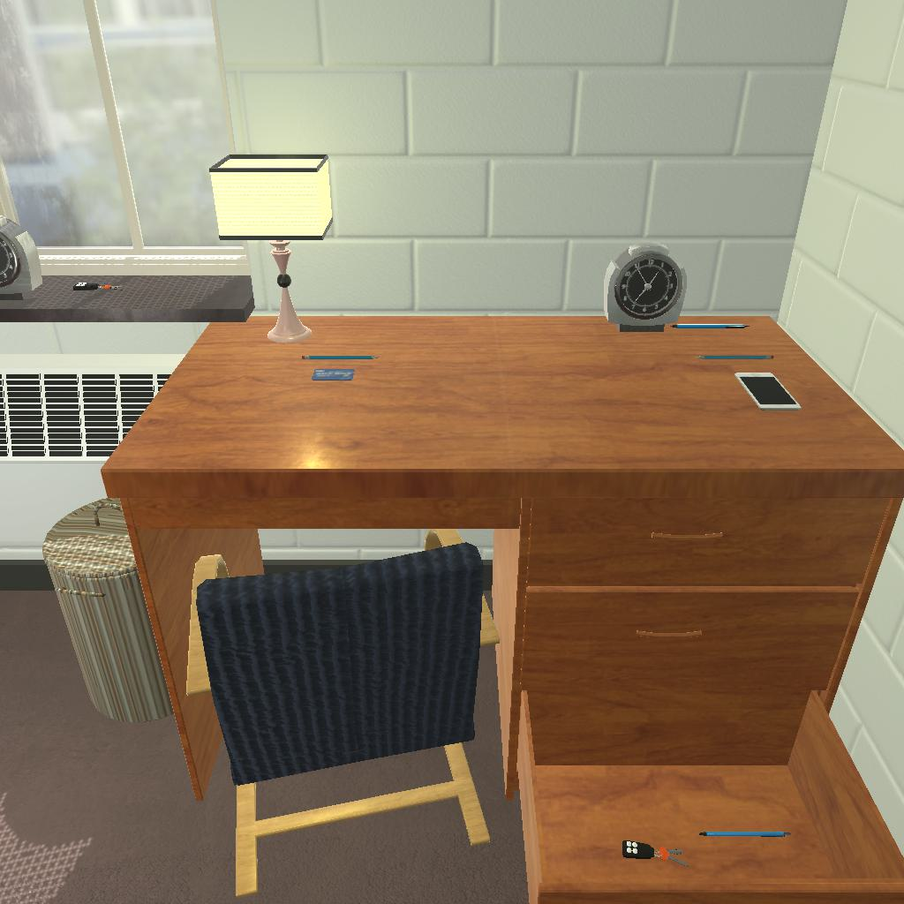

---------------------------------------------------------task: 8---------------------------------------------------------
--------------------------------------------------------------------------------------------------------------------------------------------------------------------
--------------------------------------------------------------------------------------------------------------------------------------------------------------------
Step:--------------------------------------------------------------------------13-------------------------------------------------------------------------------
----------------------------------------
VLM Prompt:
Image1:
Image2:
**Instruction**
1. Analyze the provided images to identify all visible household objects and compare the difference between images (e.h. whether the object is opened or not and taken on hand or not), focusing on those relevant to the task description "put a laptop in desk."
2. Use the analysis of images and the task hint "The agent must find an object of the desired type, pick it up, find the correct location to place it, and put it down there." to answer the question: what is the most reasonable action in the choices for the task description "put a laptop in desk"?
3. Decide and write the answer using the template: The answer is: (i): , where i is the real number. If there is no desired object in images, search every place based on **Initial Observation** to find the object. And if no one is exactly correct, choose a similar answer.
**Initial Observation**
You are in the middle of a room. Looking quickly around you, you can see bed (1), garbagecan (1), desk (1), sidetable (1), drawer (1-5), laundryhamper (1)
**Answer Choices**
(1): go to bed 1
(2): go to garbagecan 1
(3): go to desk 1
(4): go to sidetable 1
(5): go to drawer 2
(6): go to laundryhamper 1
(7): go to drawer 3
(8): go to drawer 4
(9): go to drawer 5
(10): open drawer 1
(11): close drawer 1
(12): take book 1 from drawer 1
(13): take cd 1 from drawer 1
(14): take pen 2 from drawer 1
(15): examine drawer 1
**Answer**
Let's think step by step by following the instructions.
----------------------------------------
----------------------------------------
Original Response:
Image Analysis:
- In Image 1, we can see a desk with a lamp, clock, and a couple of pens on it. There is no laptop visible on the desk or in the immediate surroundings. The drawers of the desk are closed.
- In Image 2, we see a mirror reflecting a bed with a plush toy on it, and there is a side table with a CD and a book on it. No laptop is visible here either.
Task Hint Analysis:
- The task requires finding a laptop, picking it up, and placing it on the desk.
Initial Observation:
- The initial observation lists several items in the room, including a desk, side table, and multiple drawers that could potentially contain the laptop.
Action Decision:
Based on the information provided, the most reasonable action to find the laptop would be to search in places where a laptop might be stored when not in use. Since the desk and side table do not have the laptop on them, the next logical locations would be the drawers. The action should be to go to the drawers and open them to find the laptop.
The answer is: (10): open drawer 1
If the laptop is not found in drawer 1, the subsequent actions would be to open the other drawers listed in the choices until the laptop is found.
----------------------------------------
----------------------------------------
>>> Refine Original VLM Response and Get Pure Action: open drawer 1
If the laptop is not found in drawer 1, the subsequent actions would be to open the other drawers listed in the choices until the laptop is found
----------------------------------------
-----------------------------------------------------------------
Running time: 11.996070861816406 seconds
Total Money: 3.3693500000000025
-----------------------------------------------------------------
-----------------------------------------------------------------
Text Observation:Nothing happens.
-----------------------------------------------------------------
UNSUCCEED